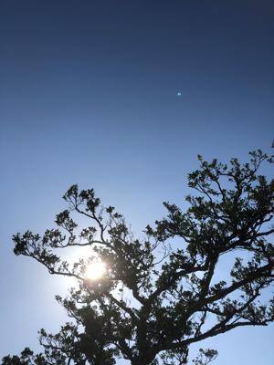
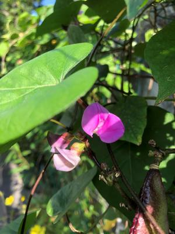

うるがいの話 ある日
最新: 映画『生きたい』【うるがいの話 ある日】とは 一日だけのプログです
『うるがいの話』の最新一日だけのプログで、通信料が少なく経済的だ。カニの画像をクリックすると全ての日付が載る『うるがいの話』サイトを表示します
|
|
【うるがいの話】 うるがい(ｳﾙｶﾞｲ urugai)とは、『もずくがに』の名前でとても大きくなります。 |
|---|---|
|
|
【カミマヤーの話】 猫のことを方言でマヤーといいます。カミマヤー（kamimayaa）とは、神の猫のことです。 |
|
【たながぁの音楽】 たながぁ（ﾀﾅｶﾞｰ tanagaa）とは手長えびのことで、何種類かあり大きいのは車 エビぐらいになります。 |

|
【ぶながぁの話】 ぶながぁ(ﾌﾞﾅｶﾞｰ bunagaa)とは、赤い髪の毛、赤い身体、そして身長は１ｍ２０ｃｍ ぐらい、川の蟹を食べているの目撃された。場所は沖縄県国頭郡大宜味村のと ある村僕の隣近所に住んでいる爺さんから、聞いた話です。 |
|
|
【ギーマの話】 ギーマ(giima)とは、山原の里山に咲くスズランに似た、 花を付けます。実は食べられます、 気が付くと口の周りが紫になっています。 |
2023年01月22日 (日）映画『生きたい』
16:20

昼前、自宅の駐車場から、車を出そうとしたら近所の主婦が二人でユンタクして
いた。そして、今年初めて初めて挨拶を交わした主婦は、『おはようございます
、じゃない、こんにちは、か、いや、明けましておめでとう』と言われる。さら
とコンニチハと挨拶をする。そうそう、今日は旧正月なのである。一応、仏壇に
は重箱などをウサギる。いつまで、できるのだとうか。 
映画『生きたい』を観た、７０歳なる主人公（三国連太郎）の年金が２０万８千
円とあった、オ！、たまたま、マイポータルから届いたお知らせを読んでいるつ
いでに将来の年金額をみた後なので、私より多いと驚く。ただ、私の場合、最初
の会社を退職した時、企業年金を一括でもらい住宅ローンの繰り上げ資金に充て
たのでその分が年金から少なくなっているが。そして、映画の中で主人公が老人
ホームに入る費用が、１４万７千円かかるとあった。今、ヨメはお義母さんを老
人ホームに入れるための費用をいろいろ調べているが、その額とほぼ一緒なので
ある。マ、普通の人ならばこの映画は見ないだろうが、私にとってはとても実感
があった。私ならば、老人ホームには入りたくないと改めて思った。
１６時１５分 ビットコインの総資産 ￥８、６１１（↑１２９）